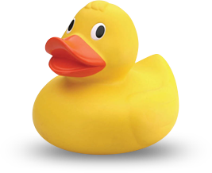

<template id="shadowDuck">
    <style>
     :host{
        min-width: 267px;
        min-height: 218px;
        display: inline-block;
    }
    </style>
    <audio id="quack" src="quack.mp3"></audio>
    
    <audio id="bugTrace"></audio>
</template>
<script>
(function() {
    var importedDoc = (document._currentScript || document.currentScript).ownerDocument;
    var templ = importedDoc.getElementById("shadowDuck");

    resolveRelativePaths(templ.content, importedDoc.baseURI);
    // resolve relative paths
    function resolveRelativePaths(root, url){
        var nodes = root.querySelectorAll('[src]');// ('[href],[src],[action],[style],[url]');
        if (nodes) {
            for (var i = 0, l = nodes.length, n; (i < l) && (n = nodes[i]); i++) {
                resolveElementAttributes(n, url);
            }
        }
    }
    function resolveElementAttributes(node, url) {
    //url = url || baseUrl(node);
    //URL_ATTRS.forEach(function(v) {
    var v = "src";
      var attr = node.attributes[v];
      var value = attr && attr.value;
      var replacement;
        // if (v === 'style') {
        //   replacement = replaceUrlsInCssText(value, url, false, CSS_URL_REGEXP);
        // } else {
          replacement = resolveRelativeUrl(url, value);
        // }
        attr.value = replacement;
    //});
    }
    function resolveRelativeUrl(baseUrl, url) {
        // do not resolve '/' absolute urls
        if (url && url[0] === '/') {
            return url;
        }
        // do not resolve '#' links, they are used for routing
        if (url && url[0] === '#') {
            return url;
        }
        var u = new URL(url, baseUrl);
        return  u.href;
    }


    // Creates an object based in the HTML Element prototype
    var RubberDuckDebugger = Object.create(HTMLElement.prototype);

    // Fires when an instance of the element is created
    RubberDuckDebugger.createdCallback = function() {
        var sroot = this.createShadowRoot();
        sroot.appendChild( document.importNode(templ.content, true) );
        this.ask = this.ask.bind(this);
    };

    // Fires when an instance was inserted into the document
    RubberDuckDebugger.attachedCallback = function() {
        this.addEventListener("click", this.ask);
    };

    // Fires when an instance was removed from the document
    RubberDuckDebugger.detachedCallback = function() {
        this.removeEventListener("click", this.ask);
    };

    // Fires when an attribute was added, removed, or updated
    RubberDuckDebugger.attributeChangedCallback = function(attr, oldVal, newVal) {};

    RubberDuckDebugger.ask = function(){
        var duck = this;
        var bugTrace = duck.shadowRoot.getElementById("bugTrace");
        this.shadowRoot.getElementById("quack").play();

        if(duck.listening){
            duck.stream.stop();
            duck.listening = false;
        } else {
            navigator.getUserMedia  = navigator.getUserMedia || navigator.webkitGetUserMedia || navigator.mozGetUserMedia || navigator.msGetUserMedia;

            navigator.getUserMedia(
                {video: false, audio: true},
                function(stream){
                    duck.listening = true;
                    bugTrace.src = window.URL.createObjectURL(stream);
                    duck.stream = stream;
                }, function(){console.warn.apply(console,arguments)});
        }
        function onRecordFail (e) {
           console.warn(e);
        }
    };
    document.registerElement('rubber-duck-debugger', {
        prototype: RubberDuckDebugger
    });
}());
</script>
